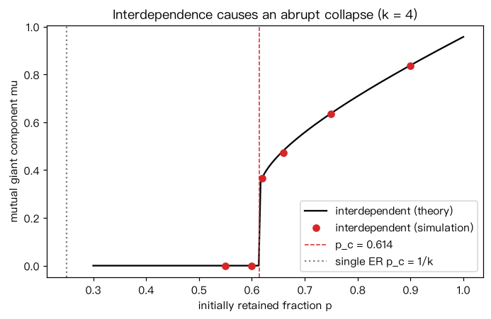

Example06 / 09
相互依存 ER 网络的级联（Buldyrev 等 2010）
两个 ER 网络 A、B 平均度均为 k，节点一一依赖。初始随机保留比例 p 的 A 节点，然后交替执行： A 中只保留巨分支 -> B 中依赖已失效 A 节点的节点失效 -> B 中只保留巨分支 -> A 中对应节点失效 …… 直到稳定。 理论：相互巨分支比例 mu 满足 mu = p (1 - exp(-k mu))^2，p_c = 2.4554/k，且 mu 在 p_c 处不连续地跳到 0。 解读：模拟的 mu(p) 与理论一致，阈值远高于单个 ER 网络的 p_c = 1/k，并呈现突变式（一级）崩溃。
Output输出图

Output文字输出
理论：k*p_c = 2.4554，跳变处 k*mu_c = 1.2564 p=0.90 理论 mu=0.838 模拟 mu=0.837 p=0.75 理论 mu=0.637 模拟 mu=0.634 p=0.66 理论 mu=0.482 模拟 mu=0.472 p=0.62 理论 mu=0.369 模拟 mu=0.365 p=0.60 理论 mu=0.000 模拟 mu=0.000 p=0.55 理论 mu=0.000 模拟 mu=0.000
Code代码
# 两个 ER 网络 A、B 平均度均为 k，节点一一依赖。初始随机保留比例 p 的 A 节点，然后交替执行：
# A 中只保留巨分支 -> B 中依赖已失效 A 节点的节点失效 -> B 中只保留巨分支 -> A 中对应节点失效 …… 直到稳定。
# 理论：相互巨分支比例 mu 满足 mu = p (1 - exp(-k mu))^2，p_c = 2.4554/k，且 mu 在 p_c 处不连续地跳到 0。
# 解读：模拟的 mu(p) 与理论一致，阈值远高于单个 ER 网络的 p_c = 1/k，并呈现突变式（一级）崩溃。
import numpy as np
import networkx as nx
from scipy.optimize import minimize_scalar
def mu_theory(p, k):
mu = 1.0
for _ in range(5000):
mu = p * (1 - np.exp(-k * mu)) ** 2
return mu
res = minimize_scalar(lambda z: z / (1 - np.exp(-z)) ** 2, bounds=(0.1, 10), method="bounded")
print("理论：k*p_c = %.4f，跳变处 k*mu_c = %.4f" % (res.fun, res.x))
def lcc_nodes(G, alive):
H = G.subgraph(alive)
if H.number_of_nodes() == 0:
return set()
return set(max(nx.connected_components(H), key=len))
def interdependent(GA, GB, p, rng):
n = GA.number_of_nodes()
alive = set(int(v) for v in rng.choice(n, int(p * n), replace=False))
while True:
a = lcc_nodes(GA, alive) # 依赖关系为 i <-> i
b = lcc_nodes(GB, a)
if b == alive:
break
alive = b
return len(alive) / n
k, n = 4.0, 20000
rng = np.random.default_rng(0)
GA = nx.fast_gnp_random_graph(n, k / (n - 1), seed=1); GB = nx.fast_gnp_random_graph(n, k / (n - 1), seed=2)
ps, mus = [0.9, 0.75, 0.66, 0.62, 0.60, 0.55], []
for p in ps:
mus.append(interdependent(GA, GB, p, rng))
print("p=%.2f 理论 mu=%.3f 模拟 mu=%.3f" % (p, mu_theory(p, k), mus[-1]))
import matplotlib.pyplot as plt
pg = np.linspace(0.3, 1, 200)
fig, ax = plt.subplots(figsize=(6.4, 4.2))
ax.plot(pg, [mu_theory(x, k) for x in pg], "k-", label="interdependent (theory)")
ax.plot(ps, mus, "o", c="tab:red", label="interdependent (simulation)")
ax.axvline(res.fun / k, ls="--", c="tab:red", lw=1, label="p_c = %.3f" % (res.fun / k))
ax.axvline(1 / k, ls=":", c="0.5", label="single ER p_c = 1/k")
ax.set_xlabel("initially retained fraction p"); ax.set_ylabel("mutual giant component mu"); ax.legend()
ax.set_title("Interdependence causes an abrupt collapse (k = 4)")
plt.tight_layout(); plt.show()Run在浏览器中运行
首次加载 Python 环境约需 20–40 秒；可以修改参数后重新运行。